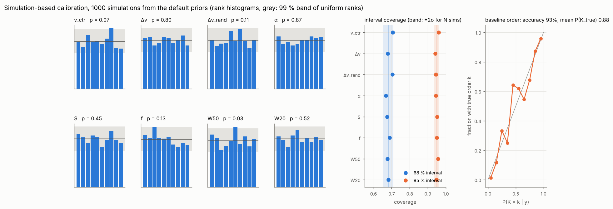
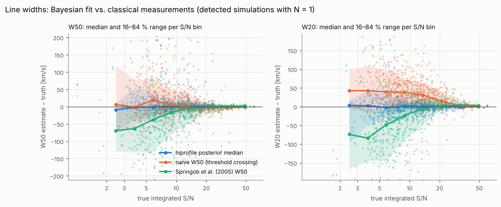
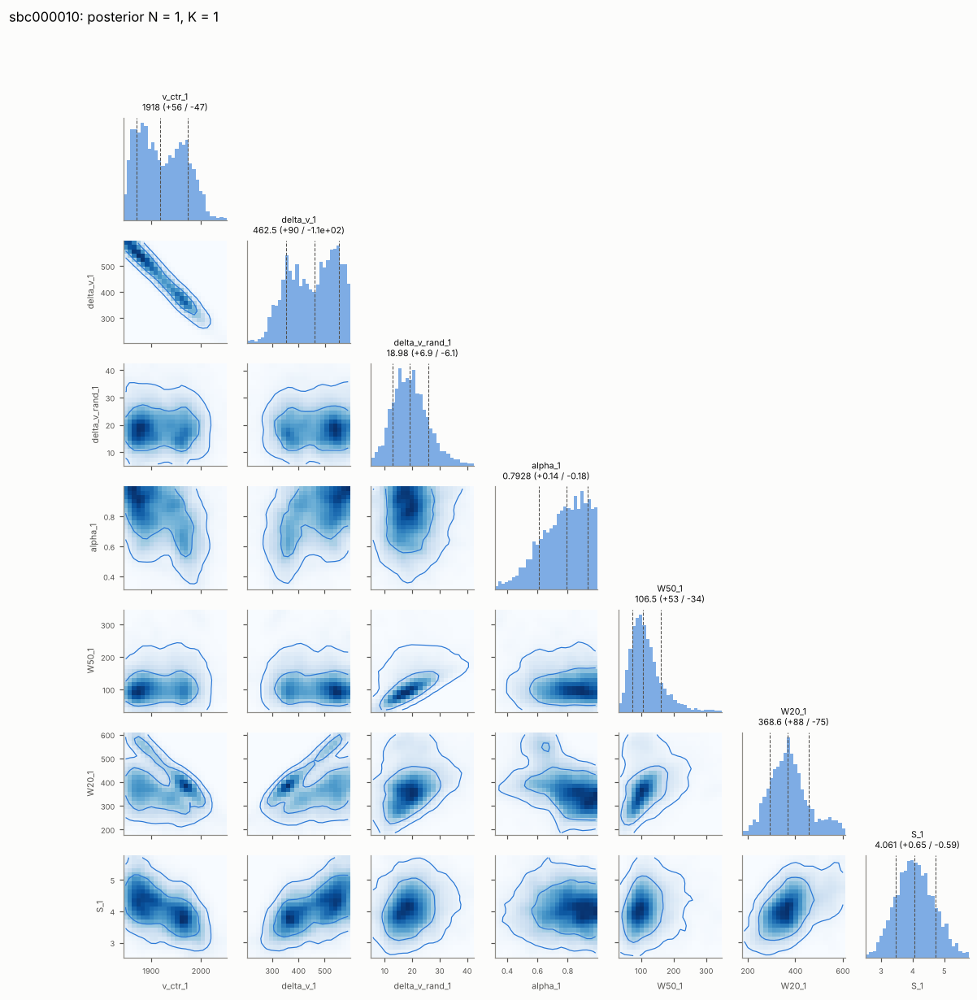
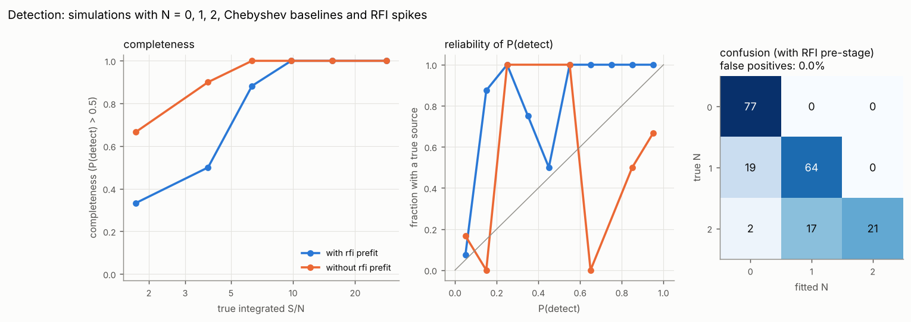
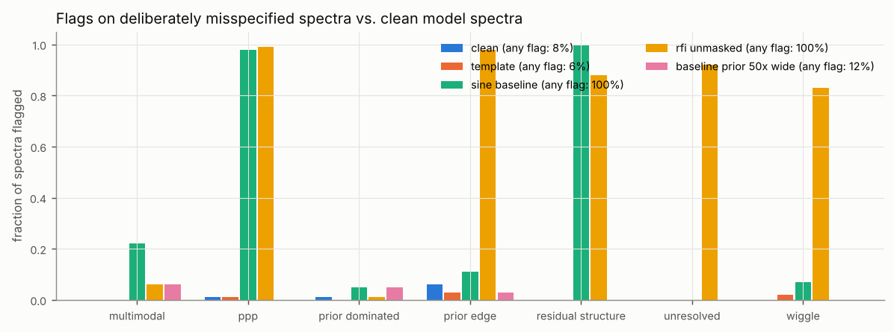
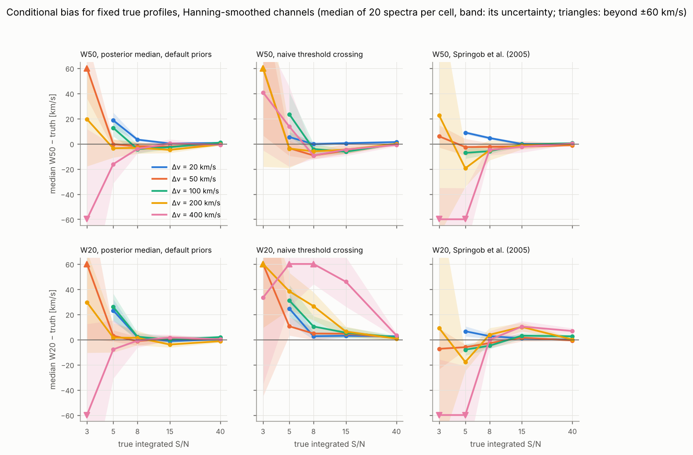
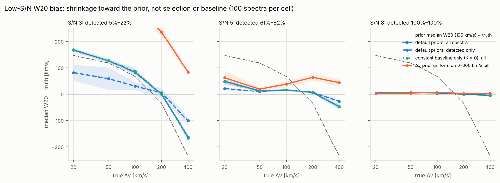
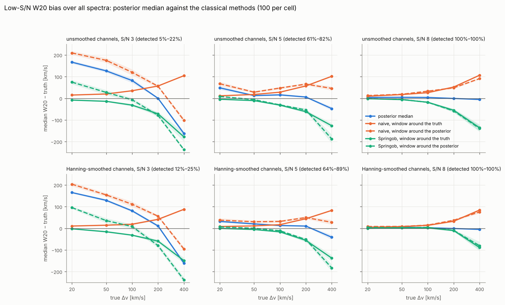
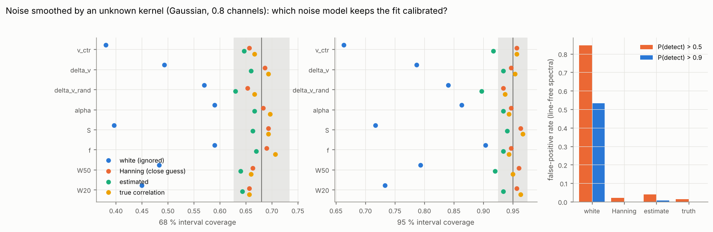
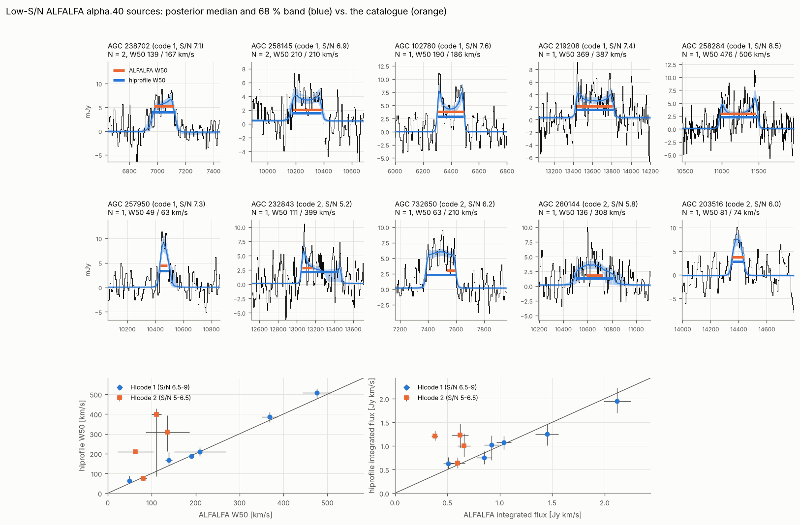

Validation¶
Everything on this page comes from runs of benchmarks/validate_all.sh on
a 4-core machine with the default configuration (full mode, SMC sampler,
N ≤ 2, K ≤ 3, RFI pre-stage, Δv ~ Gamma(2.3, 83 km/s), f ~ Beta(1, 3)),
5 km/s channels unless stated otherwise. SBC, detection and
misspecification were refitted at d053ea5, with profile components
contained in the band (priors.contain; simulations and fits use it) and
the current RFI pre-stage (symmetric outlier background, runs below the
model masked whatever their length). The bias and ALFALFA fits were made at
commit 2724f8a (the Δv prior), and later commits only add the Springob
et al. (2005) widths, which
benchmarks/add_springob.py computed from the stored spectra and
baselines (the naive values are reproduced exactly), and the Hanning bias
run. The low-S/N bias decomposition (benchmarks/w20_bias.py) ran at
b0f5c72, the same fitting code. The correlated-noise study is from 61a2b05 with the earlier
log-normal Δv prior; it tests the noise model, which the prior does not
touch.
Classical references. Every stage measures the widths in two classical ways on the same baseline-subtracted spectra, in a window of ±(W20/2 + 25 % + 2 channels) around the posterior v_sys, as a by-eye window would be chosen:
- naive: outermost channels above 50 % / 20 % of the peak channel, interpolated linearly to the next channel outward;
- Springob et al. (2005) W_F50, as used for the ALFALFA catalogue widths: per horn, a straight line fitted to the flank between the first channels below 85 % and 15 % of (horn − rms), read at 50 %; for Hanning-smoothed spectra minus their instrumental correction 2 Δv_chan λ(S/N). Read at 20 % of the same lines it gives a W20, which is our extension of the method (λ is calibrated for W_F50 only). Where a flank cannot be fitted (fit rising away from the horn, crossing outside the window) it gives no value; that happens for 18 % of the detected SBC lines, nearly all at S/N < 8.
| stage | command | spectra |
|---|---|---|
| SBC | hiprofile validate --stage sbc --n 1000 --seed 11 |
1000 |
| detection | hiprofile validate --stage detection --n 200 --seed 21 |
200, fitted twice |
| misspecification | hiprofile validate --stage misspec --n 100 --seed 31 |
5 × 100 |
| conditional bias | python benchmarks/bias_study.py --n 20 --priors default\|flat, and --response boxcar+hanning |
3 × 500 |
| low-S/N bias causes | python benchmarks/w20_bias.py --n 100, and --variants default --response boxcar+hanning |
1500, fitted three times; 1500 Hanning |
| correlated noise | python benchmarks/correlated_noise.py --n 300 --n-noise 150 |
450, fitted four times |
| real data | python benchmarks/alfalfa_study.py |
10 ALFALFA sources |
Stage 1: simulation-based calibration¶
Every simulation is drawn from the fit priors: the five shape parameters, the flux (half-normal, scale 4 Jy km/s) and a Chebyshev baseline of order K ~ U{0, …, 3} with coefficients from the baseline prior; white noise with σ = 0.01 Jy on 512 channels. The fit uses the same priors with the order marginalised. The rank of the truth among 99 posterior draws must then be uniform, and the posterior intervals must cover the truth at their nominal rate.
| parameter | rank p-value | 68 % coverage | 95 % coverage |
|---|---|---|---|
| v_ctr | 0.07 | 0.71 | 0.96 |
| Δv | 0.80 | 0.68 | 0.94 |
| Δv_rand | 0.11 | 0.71 | 0.94 |
| α | 0.87 | 0.67 | 0.95 |
| S | 0.45 | 0.68 | 0.95 |
| f | 0.13 | 0.69 | 0.95 |
| W50 | 0.03 | 0.68 | 0.96 |
| W20 | 0.52 | 0.68 | 0.95 |

The 68 % coverages lie inside the ±2σ band for 1000 simulations (0.65–0.71), the 95 % coverages inside theirs (0.936–0.964). Seven of eight rank histograms pass (p ≥ 0.07); the W50 histogram has p = 0.03 (counts 112, 104, 79, 88, 99, 129, 92, 108, 87, 102 in ten bins), one high and one low bin without a slope or U shape. With eight tests, one p below 0.05 turns up by chance in a third of all runs; the previous run, without containment, had the same pattern in Δv_rand (p = 0.03) and a flat W50 (p = 0.10). The faint draws of the flux prior that are not detected take part like every other simulation.
Baseline order. The most probable K is the true one in 93 % of the simulations and P(K_true | y) averages 0.88; the reliability curve (right panel) follows the diagonal. The confusion matrix (rows: true K, columns: most probable K) is one-sided:
267 1 0 0
14 227 2 0
5 15 219 1
1 6 26 216
A true K = 3 whose highest coefficients happen to be small is read as K = 2, the right answer for terms the data cannot see. This calibration holds when the baseline prior matches the baselines; Stage 3 shows what happens when it does not.
Flags. 12.9 % of the fits carry a flag: prior_edge 6.8 % (Δv_rand at
its 4 km/s bound for faint, narrow lines), prior_dominated 3.4 %,
wiggle 2.0 %, ppp 1.0 %, multimodal 0.8 %, residual_structure 0.1 % (its
calibrated false-alarm rate).
The same simulations measured against the truth (739 detected, N = 1; median error and robust scatter):
| quantity | Bayes | naive | Springob |
|---|---|---|---|
| W50 [km/s] | 0.0 ± 10.6 | −0.3 ± 21.0 | −7.4 ± 21.5 (607 measured) |
| W20 [km/s] | 0.4 ± 11.6 | 28.9 ± 37.0 | −8.8 ± 32.5 |
| S [Jy km/s] | 0.01 ± 0.38 | 0.05 ± 0.39 | – |
| v_sys [km/s] | −0.3 ± 4.8 | −0.5 ± 8.5 | −0.2 ± 9.2 |

The posterior medians are unbiased with half the scatter of either classical width. Each classical method fails in its own way at low S/N: noise peaks above the 20 % threshold make the naive W20 too wide, and in these unsmoothed 5 km/s channels a noise dip next to a horn ends the Springob flank search early, so its widths come out too narrow below S/N ≈ 15. Above S/N ≈ 25 all three agree (figure). The SBC population is drawn from the prior with unsmoothed channels; for Hanning-smoothed spectra, where Springob's method is at home, see the bias study below.
Example posterior (corner plot of a low-S/N spectrum with a bimodal centre):

Stage 2: detection and confusion¶
200 spectra with N = 0, 1, 2 (probabilities 0.4, 0.4, 0.2), integrated S/N 2–40 per component, a first-order baseline and single-channel RFI spikes (2–3 per spectrum), fitted with and without the RFI pre-stage and the automatic flux-prior scale.

| with RFI pre-stage | without | |
|---|---|---|
| false positives, P(detect) > 0.5 / 0.9 | 0 of 77 / 0 | 83 % / 83 % |
| completeness S/N 3–5 / 5–8 / ≥ 8 | 0.50 / 0.88 / 1.00 | 0.90 / 1.00 / 1.00 |
| flagged | 4.0 % | 86 % |
Confusion matrix with the pre-stage (rows: true N, columns: most probable N):
77 0 0
19 64 0
2 17 21
- N = 0 and N = 1 are separated cleanly: no false positive at any
threshold, and no single line split into two. Without the pre-stage the
RFI spikes are fitted as lines (83 % false positives, 64 % flagged
unresolved, 48 %residual_structure); its higher "completeness" is the same effect. - The completeness at S/N 3–5 is that of the SBC, which has no RFI, so the pre-stage costs none.
- N = 2. Of the 19 pairs with both components at S/N > 6 and separated by more than their width, 17 are fitted as N = 2. Pairs with a second component below S/N 6 (21 of 40) are mostly fitted as N = 1: a second line at S/N 3 is not detectable on its own either.
- Widths of the detected single lines (bias ± scatter, km/s): W50 0.0 ± 9.9 (naive −1.2 ± 12.3, Springob −4.5 ± 12.8), W20 0.0 ± 9.2 (naive 25.6 ± 30.5, Springob −3.8 ± 19.6).
- The symmetric pre-stage (current default) against the earlier positive-only one: no false positive either way; completeness at S/N 3–5 0.50 instead of 0.55 (one line of 20). Narrow test lines (Δv = 20 and 50 km/s at S/N 5 and 8, 50 each) lose no channel to the mask.
Stage 3: misspecification¶
Five sets of 100 one-component spectra at S/N 5–80: model profiles
(clean); profiles the model does not generate (template: tilted-ring
galaxies with a rising rotation curve, inclinations 30–85°, lopsidedness up
to 30 % and central HI holes, integrated on a fine grid); model profiles on
a sinusoidal baseline that no Chebyshev polynomial up to K = 3 describes;
model profiles with RFI and no pre-stage; and Chebyshev baselines of order
0–3 whose coefficients are 50 times smaller than the fit's automatic prior
scale.

| set | flagged | W50 bias / scatter [km/s] | 68 % coverage of W50 | W50 scatter naive / Springob | W20 bias / scatter: Bayes, naive, Springob |
|---|---|---|---|---|---|
| clean | 8 % | −0.3 / 4.9 | 0.71 | 10.6 / 10.0 | 0.8 / 4.4, 7.4 / 19.8, 2.9 / 9.7 |
| template | 6 % | −1.5 / 6.1 | 0.72 | 11.8 / 10.6 | 0.6 / 6.7, 18.7 / 26.4, 0.3 / 12.7 |
| sine baseline | 100 % | −1.8 / 31.6 | 0.28 | 29.5 / 24.6 | −2.3 / 44.9, 2.1 / 51.0, 1.0 / 33.9 |
| RFI unmasked | 100 % | −96 / 122 | 0.15 | 106 / 57 | −105 / 135, −120 / 140, −29 / 61 |
| baseline prior 50 × too wide | 12 % | 0.8 / 7.4 | 0.71 | 12.2 / 11.0 | 1.2 / 6.6, 24.1 / 36.5, 2.2 / 14.2 |
- The model describes the galaxy-like templates well enough that the widths stay unbiased and calibrated, with less scatter than either classical method, which see the same profiles.
- When the model is wrong the posteriors are overconfident, as any
posterior of a wrong model is, but the flags catch it:
residual_structuremarks every sine-baseline fit andppp98 % of them (the symmetric pre-stage masks some of the wave's troughs as runs below the model, which widens the W50 scatter from 25 to 30 km/s there);ppp,prior_edge,unresolved,residual_structure(88 %) andwigglemark the RFI fits. Unmasked RFI hurts the Springob widths least, because a spike rarely lies on a flank; it is still the flagged fits that tell the user something is wrong. - A wrong baseline prior leaves the line parameters unbiased and
calibrated, but not the baseline order: the most probable K is right in
41 % of the spectra, nearly always too low (23 of 28 true K = 3 are fitted
as K = 0). Coefficients of 0.2 σ per channel are barely visible, and with
a prior 50 times too wide the Occam factor wins. The
p_kcolumns of the catalogue are calibrated only with a fittingpriors.baseline_scale, for example from signal-free neighbour spectra (hiprofile.likelihood.baseline.baseline_prior_from_spectra).
Conditional bias: priors and classical methods¶
The SBC shows that the posteriors are calibrated on average over the
prior. For a given galaxy the posterior median is still pulled towards
typical values when the data are weak. The bias study fixes the true
profile on a grid of widths (Δv = 20–400 km/s, Δv_rand = 12 km/s, α = 0.1,
f = 0.25) and integrated S/N (3–40), simulates 20 spectra per cell and fits
them with the default priors and with flat priors (log-uniform Δv and
Δv_rand, uniform α and f). A third run repeats the default-prior case with
Hanning-smoothed spectra (the line and white noise smoothed alike, so the
integrated S/N is unchanged and the channel rms drops to 0.61 of it), fitted
with model.response: boxcar+hanning; that is how ALFALFA and most
single-dish spectra are delivered, and where Springob's correction applies.
Medians are over the spectra the fit detects (P(detect) > 0.5).


Largest |median error| over the widths, in km/s (in brackets: median of the per-cell scatter):
| channels | S/N | W50 Bayes | W50 naive | W50 Springob | W20 Bayes | W20 naive | W20 Springob |
|---|---|---|---|---|---|---|---|
| unsmoothed | 5 | 31 (29) | 36 (53) | 141 (27) | 29 (31) | 69 (36) | 153 (39) |
| unsmoothed | 8–40 | 10 (5) | 31 (7) | 136 (7) | 5 (7) | 103 (13) | 135 (7) |
| unsmoothed | 15–40 | 4 (4) | 12 (5) | 9 (4) | 2 (5) | 82 (11) | 10 (6) |
| Hanning | 5 | 19 (23) | 23 (49) | 167 (19) | 26 (37) | 94 (43) | 155 (16) |
| Hanning | 8–40 | 5 (5) | 9 (7) | 6 (5) ¹ | 4 (8) | 63 (10) | 10 (8) ¹ |
¹ From 20 spectra per cell; with 100 spectra the Springob widths of 400 km/s lines at S/N 8 are −89 km/s (W50) and −81 km/s (W20) off in the median (see below), so this entry holds from S/N 15 only.
- From S/N 8 upwards the posterior median with the default priors is unbiased to within 11 km/s in W50 and 5 km/s in W20 for every width, on either kind of channel.
- Springob et al. (2005) is as good as the fit for W50 on Hanning-smoothed spectra from S/N 15 (bias ≤ 3 km/s, the same scatter), and at S/N 8 for lines up to Δv = 100 km/s. For wider lines at S/N 8 the 20 spectra per cell of this study are too few: with 100 (next section) the Springob W50 of 400 km/s lines is 89 km/s too narrow in the median, by more than 50 km/s in 64 % of the spectra, where the fit is off by −10 km/s. On unsmoothed channels and at S/N 5 it fails for wide lines (−70 to −170 km/s). The per-channel S/N of a 400 km/s line at integrated S/N 8 is about 1, and the first noise dip below 15 % of the horn ends the flank fit inside the profile.
- The naive threshold crossing is fine for W50 but not for W20: noise peaks above 20 % of the peak channel widen it by up to 100 km/s for wide lines, still +46 km/s at S/N 15 with Hanning smoothing.
- At S/N 5 the default priors pull a 400 km/s line down by 31 km/s and 20–100 km/s lines up by up to 20 km/s (unsmoothed; 16 and 19 km/s with Hanning). The flat priors pull the wide line down by 137 km/s and a 200 km/s line by 42 km/s. A flat prior is therefore not the unbiased choice: the log-uniform width prior puts most of its mass at small widths, and the faint wings of a wide line are lost in the noise and the baseline whatever the prior.
- Selection. At S/N 5 only about half of the 20 km/s lines are
detected (45 %, 60 % with Hanning), and those that are are the ones whose
noise made them look brighter and wider: their W20 is 23–29 km/s too wide,
and the 68 % interval of W20 covers the truth in 11 % (42 % with Hanning)
of them. This is a property of the detected subsample, not of the
posterior: over all simulations the SBC coverages hold. The
prior_dominatedflag marks up to half of the fits at S/N 5 (the 400 km/s lines); the width of a line at S/N ≤ 5 is largely a statement of the prior, not a measurement.
Where the low-S/N bias comes from¶
benchmarks/w20_bias.py refits the cells at S/N 3, 5 and 8 with 100
spectra each (unsmoothed channels unless stated otherwise, no baseline in the data) three times:
with the default configuration, with only a constant baseline (K = 0), and
with a Δv prior uniform on 0–800 km/s. Medians are taken over all spectra
(the N = 1 posterior exists for every spectrum), over the detected and over
the undetected ones, with bootstrap errors.

| Δv, S/N | detected | all | detected | undetected | K = 0 only, all | uniform Δv prior, all |
|---|---|---|---|---|---|---|
| 400 km/s, 3 | 12 % | −163 ± 9 | −102 ± 14 | −168 ± 9 | −166 ± 12 | +84 ± 9 |
| 400 km/s, 5 | 70 % | −48 ± 9 | −28 ± 7 | −92 ± 19 | −48 ± 10 | +44 ± 14 |
| 400 km/s, 8 | 100 % | −5 ± 2 | −5 ± 2 | – | −6 ± 2 | +2 ± 2 |
| 200 km/s, 5 | 82 % | +6 ± 3 | +7 ± 4 | +6 ± 6 | +5 ± 3 | +64 ± 12 |
| 20 km/s, 5 | 61 % | +48 ± 9 | +22 ± 5 | +134 ± 23 | +47 ± 8 | +62 ± 27 |
W20 error in km/s (true W20 431 km/s for Δv = 400, 50 km/s for Δv = 20).
- Not small numbers. With 100 spectra per cell the negative W20 bias of wide lines at S/N 5 is −48 ± 9 km/s (−28 ± 7 for the detected ones; the 20-spectrum study gave −20).
- Not a detection effect. The detected spectra are less biased than the undetected ones: detection picks the spectra whose noise made the line brighter and broader. Selection pushes widths up for every width, which is why narrow lines are too wide and wide lines less too narrow among the detected.
- Not the baseline. Fitting with a constant baseline only changes nothing (K > 0 is the most probable order in at most 1 % of the fits).
- It is the prior. With a Δv prior uniform on 0–800 km/s the sign flips (+44 km/s for the 400 km/s lines at S/N 5, and narrow lines become several hundred km/s too wide at S/N 3). At low S/N the posterior median moves from the truth toward the prior's typical W20 (196 km/s for the default priors): wide lines come out narrower, narrow lines wider, and lines near Δv ≈ 200 km/s are unbiased (figure: the dash-dotted line is the limit of a fit that has learned nothing). The default prior makes 400 km/s rotation rare (P(Δv > 400 km/s) = 7 %), and with a per-channel S/N of about 1 the data cannot overrule that.
Are the intervals still right? On average over the population, yes;
for one width, no. In the SBC the 68 % / 95 % coverage of W20 is
0.61 / 0.94 for true S/N < 2, 0.64 / 0.93 for 2–3 and 0.66 / 0.88 for 3–4
(143, 59 and 67 spectra; all inside their ±2σ bands). For fixed widths at
S/N 3 it is 0.03 / 0.20 for Δv = 20 km/s, 0.12 / 0.81 for 50, 0.56 / 0.98
for 100, 0.92 / 0.99 for 200 and 0.41 / 0.97 for 400 km/s. The posterior
there is the prior (its 16–84 % width, 240 km/s, equals the prior's), and a
20 km/s line has W20 = 50 km/s, below the prior's 2.5 % quantile of
58 km/s: the prior's own 95 % interval excludes it. In the SBC the 18
spectra with S/N < 4 and W20 < 100 km/s are all outside their 68 %
intervals, those with W20 > 350 km/s 74 % of the time; the many lines in the
middle of the prior make up for them. At S/N 5 the fixed-width coverages are
0.67–0.88 except for the narrowest lines (0.25). For undetected spectra the
prior_dominated flag is not set, as no profile flag is (P(detect) < 0.5
already says the width is not measured); among the detected spectra at
S/N 3 it marks 17–50 %.
This is the conditional bias that comes with a calibrated posterior: over the population the prior describes, the errors average out (SBC), for one kind of galaxy they do not. Uses that need widths unbiased for a fixed true width at S/N ≤ 5 (Tully–Fisher samples selected by width, for example) should cut at S/N ≈ 8, where the bias is below 6 km/s for every width, or fit the width distribution hierarchically.
The classical methods at low S/N¶
The same 1500 spectra, and a second set with Hanning smoothing (line and
noise smoothed alike, fitted with model.response: boxcar+hanning), are
measured with both classical methods: once in the window the pipeline uses,
around the posterior v_sys and W20, and once in a window of the same size
around the true values with a constant baseline from outside it, the best
case for an observer who knows where the line is.

| W20 error, all spectra [km/s] | Bayes | naive, true window | naive, fit window | Springob, true window | Springob, fit window |
|---|---|---|---|---|---|
| 20 km/s, S/N 5, unsmoothed | +48 | +12 | +67 | −4 | +9 |
| 400 km/s, S/N 5, unsmoothed | −48 | +102 | +46 | −127 | −188 |
| 400 km/s, S/N 8, unsmoothed | −5 | +107 | +91 | −136 | −139 |
| 20 km/s, S/N 5, Hanning | +32 | +8 | +38 | 0 | +7 |
| 400 km/s, S/N 5, Hanning | −41 | +83 | +28 | −138 | −183 |
| 400 km/s, S/N 8, Hanning | −5 | +84 | +76 | −89 | −81 |
Springob gives no value for 5–45 % of the spectra (flank not fittable); those are left out of its medians.
- Neither classical method shrinks toward a prior, but both have biases of their own that do not go away with S/N for wide lines at S/N ≤ 8: the naive W20 grows with the width (+80 to +107 km/s at 400 km/s: noise peaks keep the 20 % crossing at the window edge), the Springob W20 shrinks (−90 to −140 km/s: noise dips end the flank fit early). Hanning smoothing reduces the Springob failures but does not remove them.
- The pipeline window passes the prior on. Measured around the posterior, both classical methods inherit its pull at S/N 3: the window of a prior-dominated fit is too wide for a narrow line (naive +210 km/s instead of +15) and too narrow for a wide one.
- Where the classical methods win is the narrowest lines at S/N ≤ 5 in a window around the truth: Springob's W20 of 20 km/s lines is unbiased where the posterior median is 30–50 km/s too wide. An observer can only place that window, however, when the line is visible, which at S/N 3 it mostly is not.
No choice of prior removes the conditional bias at low S/N, because there is no information on the width there; the default priors keep it smallest for the population they were calibrated on. What the fit adds over a good classical method is therefore not a better W50 for bright (S/N ≳ 15), smoothed lines, but the W20, the low-S/N and unsmoothed cases, calibrated uncertainties, detection probabilities, the separation of blended components and the marginalisation over the baseline.
Correlated noise¶
The SBC simulations with the noise smoothed by a Gaussian kernel of 0.8 channels that the fit does not know (ρ₁ = 0.67, ρ₂ = 0.21, ρ₃ = 0.03, as after regridding; the line itself is not smoothed), plus 150 line-free spectra, fitted with four noise models.

noise.correlation |
ρ₁ used | false positives P > 0.5 / 0.9 | 68 % coverage | 95 % coverage |
|---|---|---|---|---|
white (correlation ignored) |
0 | 85 % / 53 % | 0.38–0.59 | 0.66–0.90 |
hanning+white (close guess) |
0.65 | 2.0 % / 0 % | 0.65–0.69 | 0.93–0.96 |
estimate |
0.66 (0.63–0.70 per spectrum) | 4.0 % / 0.7 % | 0.63–0.67 | 0.90–0.94 |
| true correlation | 0.67 | 1.3 % / 0 % | 0.66–0.71 | 0.94–0.97 |
- Ignoring the correlation is not an option: most line-free spectra become detections and every interval is far too narrow.
- A close guess written into
model.responseis as good as the truth.auto, which takes the correlation from the smoothing in the response, stays the default. estimatemeasures ρ₁ to ±0.035 per spectrum but leaves the posteriors slightly overconfident (coverages 2–5 points low). Use it only when the smoothing is unknown.
Channel widths¶
The runs above use 5 km/s channels. Surveys range from 1 to 15 km/s; the pipeline was checked at both ends with simulated dwarf (W50 ≈ 25 km/s) and spiral (W50 ≈ 260 km/s) profiles at S/N 10 with RFI spikes and a baseline:
| channels | dwarf | spiral | time per fit |
|---|---|---|---|
| 1 km/s, 1000 channels | W50 25 (22–29) for 28 | mean W50 error −3 km/s over 4 seeds | 13–19 s |
| 5 km/s, 512 channels | 26 (23–30) for 26 | +4 km/s | 8–10 s |
| 15 km/s, 170 channels | 26 (22–30) for 25, flagged unresolved |
268 (258–277) for 260 | 5–11 s |
Everything physical is in km/s (model, priors, derived widths), and the
channel response integrates the profile over channels of any width. The
longest run of outlier channels the RFI pre-stage may mask was once three
channels; at 15 km/s that masked 25 km/s dwarfs (3 of 3 lost), so it is now
rfi.max_width = 20 km/s (at least one channel). A line narrower than one
channel cannot be told from a spike at that resolution; the unresolved
flag (W50 below two channels) marks it. The cost of a fit scales with the
number of channels times the supersampling that the narrowest allowed
Δv_rand needs (7 at 15 km/s, 1 at 1 km/s).
Real data: low-S/N ALFALFA sources¶
Ten sources from the ALFALFA α.40 catalogue (Haynes et al. 2011), drawn at
random: six with HIcode 1 (S/N 6.5–9) and four with HIcode 2 (S/N 5–6.5,
confirmed by an optical redshift). The spectra come from NED (baseline
subtracted, Hanning smoothed, 5.2 km/s channels) and are fitted in a
±1000 km/s window with the default configuration and
model.response: boxcar+hanning; widths and fluxes are converted to the cz
scale of the catalogue.

| AGC | code | S/N | W50 ALFALFA | W50 hiprofile (16–84 %) | naive | Springob | S ALFALFA | S hiprofile | note |
|---|---|---|---|---|---|---|---|---|---|
| 238702 | 1 | 7.1 | 139 ± 8 | 167 (143–208) | 214 | 163 | 0.92 ± 0.07 | 1.02 (0.70–1.22) | second component = window-edge artefact |
| 258145 | 1 | 6.9 | 210 ± 59 | 210 (187–233) | – ¹ | – ¹ | 0.85 ± 0.07 | 0.75 (0.62–0.89) | second component on a 3 mJy bump 700 km/s away |
| 102780 | 1 | 7.6 | 190 ± 5 | 186 (179–193) | 190 | 194 | 1.04 ± 0.07 | 1.07 (0.93–1.21) | |
| 219208 | 1 | 7.4 | 369 ± 18 | 387 (357–410) | 352 | 389 | 1.45 ± 0.11 | 1.25 (1.01–1.47) | |
| 258284 | 1 | 8.5 | 476 ± 32 | 506 (478–531) | 514 | 441 | 2.12 ± 0.13 | 1.95 (1.70–2.23) | |
| 257950 | 1 | 7.3 | 49 ± 6 | 63 (50–88) | 50 | 54 | 0.51 ± 0.05 | 0.63 (0.52–0.76) | |
| 232843 | 2 | 5.2 | 111 ± 11 | 399 (86–427) | 407 | 418 | 0.62 ± 0.08 | 1.23 (0.96–1.47) | bimodal: one horn or the full profile |
| 732650 | 2 | 6.2 | 63 ± 41 | 210 (199–219) | 204 | – | 0.38 ± 0.03 | 1.21 (1.11–1.32) | neighbour AGC 231950 in the beam |
| 260144 | 2 | 5.8 | 136 ± 50 | 308 (211–392) | 193 | 135 | 0.66 ± 0.06 | 1.01 (0.78–1.26) | neighbour AGC 260955 in the beam |
| 203516 | 2 | 6.0 | 81 ± 8 | 74 (62–89) | 73 | 79 | 0.60 ± 0.07 | 0.64 (0.54–0.75) |
W50 in km/s, S in Jy km/s; naive and Springob measured by hiprofile on the same spectra, in the window around the posterior. ¹ The classical window is centred on the first fitted component, here the bump, not the catalogue source. The systemic velocities agree within 1.7σ of the posterior errors (3–78 km/s) for all sources but the confused AGC 732650.
- HIcode 1: all six widths and fluxes agree with the catalogue within the combined errors. In two spectra hiprofile prefers N = 2, but the catalogue source is one of the components and is measured correctly; the extra component sits on the rising edge of the extracted window or on a broad 3 mJy bump that is not in the catalogue. The automated Springob widths reproduce the catalogue's (which were measured the same way, interactively) to 4–35 km/s, about as well as the posterior medians do.
- HIcode 2: one of four agrees. Two are confused: a catalogued
neighbour 2.9′ and 3.8′ away (inside the 3.5′ Arecibo beam) overlaps in
velocity, and the single-spectrum fit measures the blend, which the
ALFALFA team separated with the maps; in AGC 260144 the Springob edge
fit happens to pick the catalogue galaxy's flanks (135 km/s) and the
posterior is broad (211–392 km/s) and flagged
prior_dominated. In the third (AGC 232843, S/N 5.2) the catalogue measured the bright horn only; the posterior is bimodal between that and a 400 km/s profile with the weaker emission on the far side, and its 16–84 % range covers both. - Solid-body fraction: the f medians are 0.08–0.27, apart from the two blends of two galaxies (0.45, 0.52), whose summed profiles are genuinely dome-shaped.
- Noise: the automatic Hanning + white model gives ρ₁ = 0.64–0.66. With an exact Hanning model every fit was flagged with χ²_red up to 10⁴: real smoothed spectra have a little power at the Nyquist frequency, where the exact kernel has none, and the whitening amplified it by orders of magnitude; the estimated white part (0.5–4 % here) removes that.